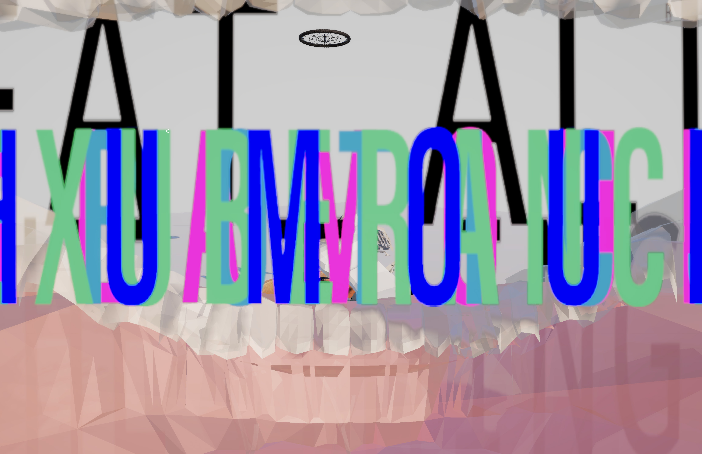
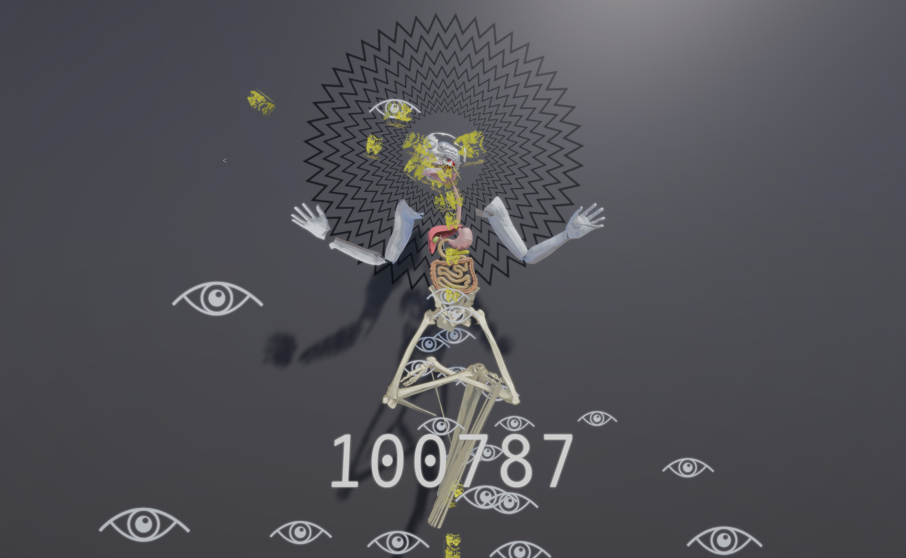

HICCUP & Eat All The Things
Interactive Art Game Remaster, 2025
On exhibition at The Rem Koolhas VIDEOBUSSTOP at eMMaplein by NP3, 2025
This project brings together two remastered art games—HICCUP and Eat All the Things—originally commissioned by the Dutch art center NP3 in 2014 for the Rem Koolhaas–designed VIDEOBUSSTOP in Groningen, The Netherlands. Conceived specifically for the urban public context of the interactive bus stop display, these works explore the expressive and poetic potential of game mechanics as artistic media. In 2025, both titles were revisited and updated for the grand reopening of the VIDEOBUSSTOP, offering contemporary audiences a renewed encounter with playful, embodied, and everyday experiences through digital form.
HICCUP was inspired by the artist’s personal experience of having hiccups for 28 consecutive hours. This involuntary rhythm became the conceptual and mechanical foundation of the game, which translates the spasmodic interruptions of hiccupping into a kinetic, sometimes frustrating, yet humorous form of play. Through this mechanic, the game foregrounds the body’s unruly rhythms and their capacity to disrupt habitual patterns of control and communication.
Eat All the Things emerged from observing the artist’s young daughter as she learned to feed herself—an act both chaotic and full of discovery. The game embraces that exploratory messiness, inviting players into a world of voracious curiosity and tactile interaction. Its mechanics are deliberately intuitive and childlike, highlighting processes of learning, desire, and sensory engagement.
Together, these two works explore how simple, bodily experiences—hiccupping and eating—can become frameworks for aesthetic reflection and playful experimentation. Installed in a public transit site, the games transform everyday waiting time into moments of embodied play and contemplation, extending the language of contemporary art into the urban fabric.

